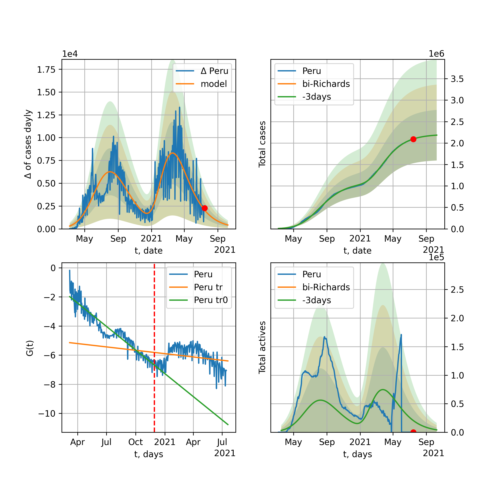
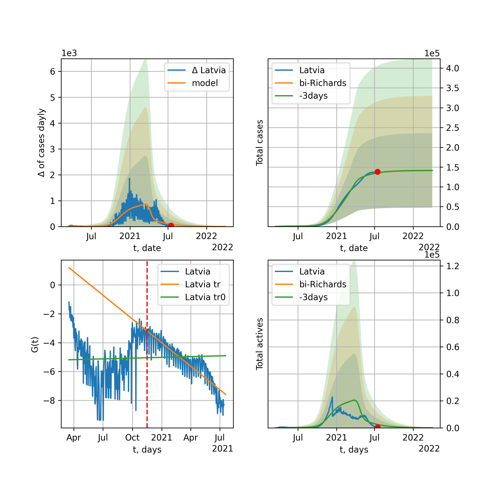
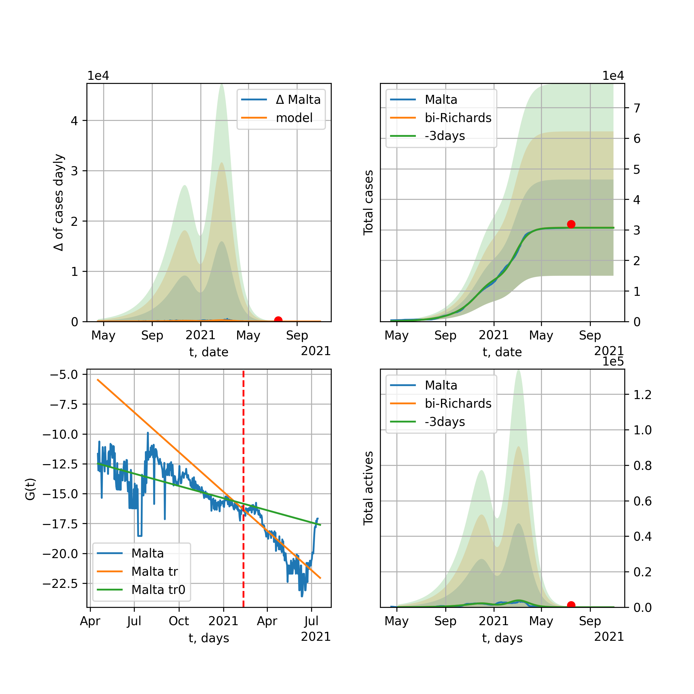
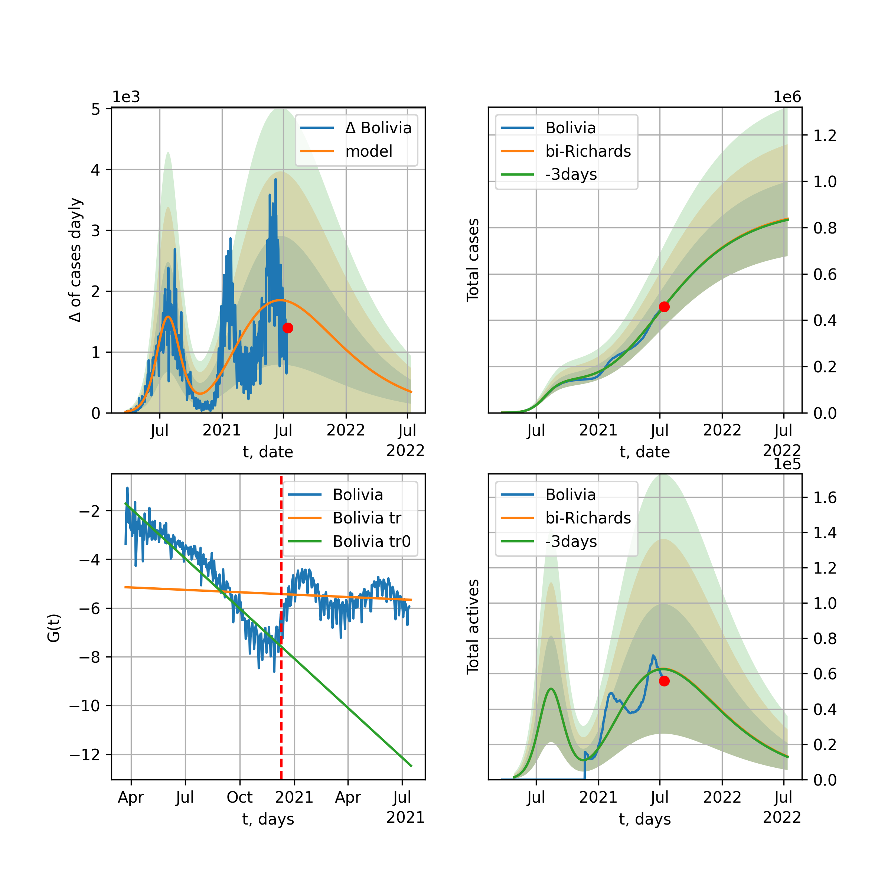
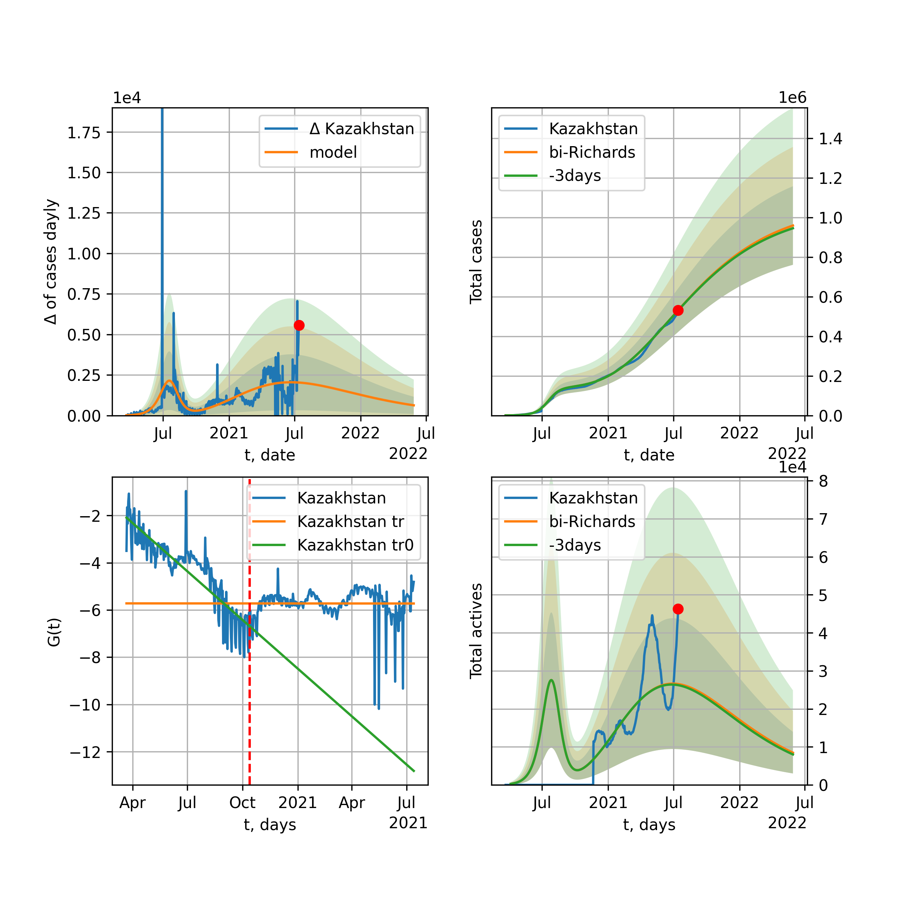

Multi-logistic model of COVID-19 dynamics
Model, code, results
Project maintained by algmaknick Hosted on GitHub Pages — Theme by mattgraham
World

World data at: 2020-12-01
+3 day model MAPE: 0.000225
model: bi-Richards
coeffs: [2.10220657e+07 2.07780311e+00 1.44942808e+02 1.95280317e-02]
rational stdev: 0.173678
forecast at the end of period: +652 days
deltaDaycases: 2650
total cases: 121273706 ± 21062546
total death: 2808520 ± 1463332
bi-Richards approximation splitting point: 200
actives k: 33
trend coefficient of determination: 0.811243
intercept: -3.110716
slope: -0.011031
trend coefficient of determination: 0.030465
intercept: -5.301741
slope: 0.001501
European Union

European Union data at: 2020-12-01
+3 day model MAPE: 0.011453
model: bi-Richards
coeffs: [1.07640708e+07 4.24621231e-02 2.55705861e+02 2.86833434e+00]
rational stdev: 0.236197
forecast at the end of period: +67 days
deltaDaycases: 30
total cases: 12234851 ± 2889832
total death: 284359 ± 201494
bi-Richards approximation splitting point: 200
actives k: 26
trend coefficient of determination: 0.536278
intercept: -36.285518
slope: -0.068533
trend coefficient of determination: 0.927866
intercept: -31.862284
slope: -0.069154
Brazil

Brazil data at: 2020-12-01
+3 day model MAPE: 0.000705
model: bi-Richards
coeffs: [1.25127738e+06 1.22029121e+00 2.14788296e+02 4.39952599e-02]
rational stdev: 0.266884
forecast at the end of period: +242 days
deltaDaycases: 154
total cases: 7806857 ± 2083522
total death: 212461 ± 170107
bi-Richards approximation splitting point: 220
actives k: 17
trend coefficient of determination: 0.578452
intercept: -2.274888
slope: -0.016487
trend coefficient of determination: 0.037622
intercept: -7.604571
slope: 0.005631
Russia

Russia data at: 2020-12-01
+3 day model MAPE: 0.003719
model: bi-Richards
coeffs: [3.53646947e+06 8.48908352e-01 3.27240115e+01 2.19216638e-02]
rational stdev: 0.174813
forecast at the end of period: +312 days
deltaDaycases: 219
total cases: 4658504 ± 814365
total death: 81178 ± 42572
bi-Richards approximation splitting point: 200
actives k: 26
trend coefficient of determination: 0.730763
intercept: -2.959815
slope: -0.015759
trend coefficient of determination: 0.042397
intercept: -5.108739
slope: 0.001457
USA

USA data at: 2020-12-01
+3 day model MAPE: 0.002336
model: bi-Richards
coeffs: [6.95010487e+06 1.09503459e+00 1.90346999e+02 4.78470892e-02]
rational stdev: 0.254386
forecast at the end of period: +655 days
deltaDaycases: 239
total cases: 23469608 ± 5970340
total death: 460753 ± 351627
bi-Richards approximation splitting point: 150
actives k: 52
trend coefficient of determination: 0.651498
intercept: -2.801005
slope: -0.019813
trend coefficient of determination: 0.325278
intercept: -6.771856
slope: 0.005832
Spain

Spain data at: 2020-12-01
+3 day model MAPE: 0.009998
model: bi-Richards
coeffs: [5.70136812e+05 1.05135592e-01 2.23897061e+02 6.60421099e-01]
rational stdev: 0.309695
forecast at the end of period: +452 days
deltaDaycases: 3
total cases: 11416440 ± 3535616
total death: 310526 ± 288505
bi-Richards approximation splitting point: 230
actives k: 35
trend coefficient of determination: 0.220877
intercept: -11.308720
slope: -0.014482
trend coefficient of determination: 0.613661
intercept: -4.406058
slope: -0.037429
Italy

Italy data at: 2020-12-01
+3 day model MAPE: 0.012366
model: bi-Richards
coeffs: [1.49101431e+06 6.79461032e-02 2.60861233e+02 1.86633910e+00]
rational stdev: 0.157278
forecast at the end of period: +67 days
deltaDaycases: 4
total cases: 1740801 ± 273789
total death: 60530 ± 28560
bi-Richards approximation splitting point: 200
actives k: 28
trend coefficient of determination: 0.574865
intercept: -21.621666
slope: -0.055421
trend coefficient of determination: 0.346963
intercept: -23.373289
slope: -0.022784
United Kingdom

United Kingdom data at: 2020-12-01
+3 day model MAPE: 0.005139
model: bi-Richards
coeffs: [1.69750799e+06 9.03147646e-02 2.18109960e+02 5.34039302e-01]
rational stdev: 0.202546
forecast at the end of period: +172 days
deltaDaycases: 5
total cases: 2020812 ± 409307
total death: 72626 ± 44130
bi-Richards approximation splitting point: 200
actives k: 35
trend coefficient of determination: 0.627620
intercept: -7.956496
slope: -0.029511
trend coefficient of determination: 0.678781
intercept: -5.891797
slope: -0.023257
France

France data at: 2020-12-01
+3 day model MAPE: 0.008330
model: bi-Richards
coeffs: [2.07040285e+06 3.57423318e-02 2.51481290e+02 5.92246864e+00]
rational stdev: 0.095018
forecast at the end of period: +137 days
deltaDaycases: 0
total cases: 2212943 ± 210269
total death: 53083 ± 15131
bi-Richards approximation splitting point: 95
actives k: 105
trend coefficient of determination: 0.766320
intercept: -46.933587
slope: -0.412927
trend coefficient of determination: 0.841271
intercept: -64.763439
slope: -0.088482
Germany

Germany data at: 2020-12-01
+3 day model MAPE: 0.015533
model: bi-Richards
coeffs: [9.76404327e+05 5.26443857e-02 2.51520450e+02 2.14222774e+00]
rational stdev: 0.203096
forecast at the end of period: +46 days
deltaDaycases: 104
total cases: 1200512 ± 243819
total death: 19195 ± 11695
bi-Richards approximation splitting point: 210
actives k: 17
trend coefficient of determination: 0.448621
intercept: -26.501419
slope: -0.037590
trend coefficient of determination: 0.770487
intercept: -21.351431
slope: -0.045705
Turkey

Turkey data at: 2020-12-01
+3 day model MAPE: 0.024434
model: bi-Richards
coeffs: [ 1.41357960e+06 8.26140871e-01 -1.63515025e+02 1.13319401e-02]
rational stdev: 0.206045
forecast at the end of period: +438 days
deltaDaycases: 399
total cases: 1634048 ± 336686
total death: 34041 ± 21041
bi-Richards approximation splitting point: 180
actives k: 17
trend coefficient of determination: 0.644307
intercept: -2.962022
slope: -0.018752
trend coefficient of determination: 0.701433
intercept: -8.179818
slope: 0.013805
Iran

Iran data at: 2020-12-01
+3 day model MAPE: 0.007990
model: bi-Richards
coeffs: [3.14102735e+06 1.13289970e-01 2.29851760e+02 1.73191491e-01]
rational stdev: 0.256131
forecast at the end of period: +396 days
deltaDaycases: 72
total cases: 3744373 ± 959051
total death: 186568 ± 143357
bi-Richards approximation splitting point: 200
actives k: 17
trend coefficient of determination: 0.747881
intercept: -3.671139
slope: -0.022330
trend coefficient of determination: 0.744996
intercept: -9.601427
slope: 0.011153
Canada

Canada data at: 2020-12-01
+3 day model MAPE: 0.004501
model: bi-Richards
coeffs: [2.07088050e+06 3.76020674e-01 1.71796019e+01 2.94188786e-02]
rational stdev: 0.242698
forecast at the end of period: +438 days
deltaDaycases: 381
total cases: 2157919 ± 523723
total death: 68715 ± 50031
bi-Richards approximation splitting point: 200
actives k: 17
trend coefficient of determination: 0.775330
intercept: -2.334171
slope: -0.024055
trend coefficient of determination: 0.424175
intercept: -6.770465
slope: 0.008629
South Africa

South Africa data at: 2020-12-01
+3 day model MAPE: 0.005255
model: bi-Richards
coeffs: [2.29107561e+05 2.55146707e+00 3.61667182e+01 9.17045213e-03]
rational stdev: 0.288722
forecast at the end of period: +172 days
deltaDaycases: 51
total cases: 877401 ± 253324
total death: 23968 ± 20760
bi-Richards approximation splitting point: 200
actives k: 17
trend coefficient of determination: 0.701767
intercept: -1.701044
slope: -0.019530
trend coefficient of determination: 0.206243
intercept: -7.798450
slope: 0.007010
Belgium

Belgium data at: 2020-12-01
+3 day model MAPE: 0.009569
model: bi-Richards
coeffs: [4.98012875e+05 6.44182465e-02 2.34898782e+02 2.99139697e+00]
rational stdev: 0.177360
forecast at the end of period: +67 days
deltaDaycases: 0
total cases: 563963 ± 100024
total death: 16344 ± 8696
bi-Richards approximation splitting point: 170
actives k: 61
trend coefficient of determination: 0.567859
intercept: -28.609632
slope: -0.085124
trend coefficient of determination: 0.777526
intercept: -24.839828
slope: -0.073476
Peru

Peru data at: 2020-12-01
+3 day model MAPE: 0.002319
model: bi-Richards
coeffs: [6.03971982e+05 3.79700575e+00 1.16513063e+01 8.42320281e-03]
rational stdev: 0.245870
forecast at the end of period: +32 days
deltaDaycases: 284
total cases: 963621 ± 236925
total death: 35971 ± 26532
bi-Richards approximation splitting point: 110
actives k: 21
trend coefficient of determination: 0.799552
intercept: -1.446706
slope: -0.026593
trend coefficient of determination: 0.803250
intercept: -2.313753
slope: -0.015296
Netherlands

Netherlands data at: 2020-12-01
+3 day model MAPE: 0.016872
model: bi-Richards
coeffs: [4.87105044e+05 5.40992886e-02 2.32101810e+02 1.63467665e+00]
rational stdev: 0.086354
forecast at the end of period: +32 days
deltaDaycases: 136
total cases: 535860 ± 46273
total death: 9587 ± 2483
bi-Richards approximation splitting point: 150
actives k: 35
trend coefficient of determination: 0.669059
intercept: -16.642664
slope: -0.065630
trend coefficient of determination: 0.740702
intercept: -17.079327
slope: -0.031789
India

India data at: 2020-12-01
+3 day model MAPE: 0.002846
model: bi-Richards
coeffs: [6.54795893e+06 1.32133968e-01 1.29130429e+02 2.21925968e-01]
rational stdev: 0.219286
forecast at the end of period: +312 days
deltaDaycases: 110
total cases: 10743136 ± 2355818
total death: 156242 ± 102785
bi-Richards approximation splitting point: 92
actives k: 13
trend coefficient of determination: 0.863593
intercept: -3.001834
slope: -0.036284
trend coefficient of determination: 0.967794
intercept: -4.075716
slope: -0.018831
Switzerland

Switzerland data at: 2020-12-01
+3 day model MAPE: 0.019168
model: bi-Richards
coeffs: [2.97500269e+05 7.50665983e-02 2.41048331e+02 1.71872939e+00]
rational stdev: 0.193490
forecast at the end of period: +32 days
deltaDaycases: 25
total cases: 333556 ± 64539
total death: 4980 ± 2890
bi-Richards approximation splitting point: 205
actives k: 17
trend coefficient of determination: 0.302878
intercept: -19.912035
slope: -0.027277
trend coefficient of determination: 0.739210
intercept: -9.744982
slope: -0.060755
Ecuador

Ecuador data at: 2020-12-01
+3 day model MAPE: 0.002623
model: bi-Richards
coeffs: [ 1.73934472e+05 1.51079995e+00 -1.02209536e+02 1.07290122e-02]
rational stdev: 0.079242
forecast at the end of period: +172 days
deltaDaycases: 54
total cases: 235453 ± 18657
total death: 16413 ± 3901
bi-Richards approximation splitting point: 80
actives k: 26
trend coefficient of determination: 0.274028
intercept: -2.226859
slope: -0.047353
trend coefficient of determination: 0.042126
intercept: -4.417111
slope: -0.004211
Portugal

Portugal data at: 2020-12-01
+3 day model MAPE: 0.015773
model: bi-Richards
coeffs: [3.11710302e+05 8.37456029e-02 2.38511314e+02 8.30003398e-01]
rational stdev: 0.227159
forecast at the end of period: +67 days
deltaDaycases: 122
total cases: 391375 ± 88904
total death: 5961 ± 4062
bi-Richards approximation splitting point: 215
actives k: 21
trend coefficient of determination: 0.532055
intercept: -10.482433
slope: -0.023661
trend coefficient of determination: 0.678535
intercept: -6.535482
slope: -0.030224
Saudi Arabia

Saudi Arabia data at: 2020-12-01
+3 day model MAPE: 0.000126
model: bi-Richards
coeffs: [3.19434011e+04 1.88229329e+00 5.21277003e+01 1.34917368e-02]
rational stdev: 0.223324
forecast at the end of period: +32 days
deltaDaycases: 142
total cases: 364041 ± 81298
total death: 6013 ± 4028
bi-Richards approximation splitting point: 200
actives k: 17
trend coefficient of determination: 0.971283
intercept: -1.803686
slope: -0.024597
trend coefficient of determination: 0.554682
intercept: -4.775060
slope: -0.009853
Sweden

Sweden data at: 2020-12-01
+3 day model MAPE: 0.013303
model: bi-Richards
coeffs: [2.27654108e+05 6.76001572e-02 2.65824031e+02 1.51699852e+00]
rational stdev: 0.258342
forecast at the end of period: +67 days
deltaDaycases: 9
total cases: 315385 ± 81477
total death: 8222 ± 6372
bi-Richards approximation splitting point: 200
actives k: 35
trend coefficient of determination: 0.784822
intercept: -12.171209
slope: -0.069977
trend coefficient of determination: 0.201484
intercept: -24.575811
slope: 0.009132
Pakistan

Pakistan data at: 2020-12-01
+3 day model MAPE: 0.005134
model: bi-Richards
coeffs: [ 2.31366622e+06 5.02207503e-01 -3.01571235e+00 1.99455668e-02]
rational stdev: 0.272576
forecast at the end of period: +648 days
deltaDaycases: 114
total cases: 2604976 ± 710055
total death: 52743 ± 43129
bi-Richards approximation splitting point: 220
actives k: 26
trend coefficient of determination: 0.858368
intercept: -1.653991
slope: -0.024968
trend coefficient of determination: 0.910401
intercept: -13.971480
slope: 0.032579
Ireland

Ireland data at: 2020-12-01
+3 day model MAPE: 0.005076
model: bi-Richards
coeffs: [4.43764642e+04 1.06882928e-01 2.12419624e+02 7.09720881e-01]
rational stdev: 0.192083
forecast at the end of period: +32 days
deltaDaycases: 10
total cases: 73254 ± 14070
total death: 2081 ± 1199
bi-Richards approximation splitting point: 210
actives k: 35
trend coefficient of determination: 0.389186
intercept: -9.008587
slope: -0.029210
trend coefficient of determination: 0.833034
intercept: -2.408593
slope: -0.042246
Mexico

Mexico data at: 2020-12-01
+3 day model MAPE: 0.011517
model: bi-Richards
coeffs: [5.47064779e+05 1.86797518e+00 5.36251479e+01 1.17617282e-02]
rational stdev: 0.249890
forecast at the end of period: +242 days
deltaDaycases: 68
total cases: 1504289 ± 375907
total death: 143095 ± 107274
bi-Richards approximation splitting point: 200
actives k: 17
trend coefficient of determination: 0.946041
intercept: -1.728862
slope: -0.018610
trend coefficient of determination: 0.005594
intercept: -4.932547
slope: -0.001373
Singapore

Singapore data at: 2020-12-01
+3 day model MAPE: 0.000442
model: bi-Richards
coeffs: [3.96802456e+04 1.36618637e-01 7.07974661e+01 2.12549990e-01]
rational stdev: 0.338270
forecast at the end of period: +32 days
deltaDaycases: 2
total cases: 58828 ± 19899
total death: 29 ± 29
bi-Richards approximation splitting point: 80
actives k: 26
trend coefficient of determination: 0.167779
intercept: -3.170445
slope: -0.018698
trend coefficient of determination: 0.866500
intercept: -2.139518
slope: -0.033001
Chile

Chile data at: 2020-12-01
+3 day model MAPE: 0.002671
model: bi-Richards
coeffs: [1.93065650e+05 2.64669350e+00 8.98269049e+00 9.14576909e-03]
S.Korea scenario coeffs: [0.36242246, 2.56241634, 1.84890887, 0.13324732]
rational stdev: 0.661779
forecast at the end of period: +102 days
deltaDaycases: 87
total cases: 582113 ± 385230
total death: 16246 ± 32253
bi-Richards approximation splitting point: 170
actives k: 10
trend coefficient of determination: 0.912709
intercept: -1.416916
slope: -0.025293
trend coefficient of determination: 0.531477
intercept: -4.354737
slope: -0.006807
Israel

Israel data at: 2020-12-01
+3 day model MAPE: 0.097598
model: bi-Richards
coeffs: [6.38942420e+04 6.86302328e-01 1.53749151e+02 5.04954099e-02]
rational stdev: 0.391088
forecast at the end of period: +81 days
deltaDaycases: 77
total cases: 362967 ± 141952
total death: 3084 ± 3618
bi-Richards approximation splitting point: 220
actives k: 11
trend coefficient of determination: 0.027662
intercept: -4.328781
slope: -0.003477
trend coefficient of determination: 0.025285
intercept: -8.235722
slope: 0.006100
Austria

Austria data at: 2020-12-01
+3 day model MAPE: 0.015168
model: bi-Richards
coeffs: [2.42719955e+05 7.12653793e-02 2.46744149e+02 2.20386796e+00]
rational stdev: 0.248662
forecast at the end of period: +592 days
deltaDaycases: 3
total cases: 1021748 ± 254070
total death: 11899 ± 8876
bi-Richards approximation splitting point: 210
actives k: 13
trend coefficient of determination: 0.328373
intercept: -23.175920
slope: -0.028840
trend coefficient of determination: 0.864414
intercept: -10.822851
slope: -0.078202
Belarus

Belarus data at: 2020-12-01
+3 day model MAPE: 0.003910
model: bi-Richards
coeffs: [3.74767537e+05 5.19952834e-01 2.33853020e+01 2.72008215e-02]
rational stdev: 0.093653
forecast at the end of period: +382 days
deltaDaycases: 42
total cases: 444193 ± 41599
total death: 3747 ± 1052
bi-Richards approximation splitting point: 200
actives k: 21
trend coefficient of determination: 0.690685
intercept: -2.836651
slope: -0.021867
trend coefficient of determination: 0.799260
intercept: -7.250873
slope: 0.010541
Japan

Japan data at: 2020-12-01
+3 day model MAPE: 0.032231
model: bi-Richards
coeffs: [ 6.79414609e+04 6.79438359e+00 -1.33308079e+02 3.45160865e-03]
rational stdev: 0.097814
forecast at the end of period: +424 days
deltaDaycases: 0
total cases: 390974 ± 38242
total death: 5624 ± 1650
bi-Richards approximation splitting point: 190
actives k: 11
trend coefficient of determination: 0.046547
intercept: -5.242644
slope: 0.003255
trend coefficient of determination: 0.264815
intercept: -7.832251
slope: 0.017363
China

China data at: 2020-12-01
+3 day model MAPE: 0.000224
model: bi-Richards
coeffs: [ 5.49471126e+03 3.12341358e+00 -3.08361518e+02 3.79877683e-03]
rational stdev: 0.069540
forecast at the end of period: +32 days
deltaDaycases: 7
total cases: 86632 ± 6024
total death: 4638 ± 967
bi-Richards approximation splitting point: 110
actives k: 17
trend coefficient of determination: 0.820997
intercept: -1.991400
slope: -0.082699
trend coefficient of determination: 0.110526
intercept: -10.132295
slope: 0.005783
Qatar

Qatar data at: 2020-12-01
+3 day model MAPE: 0.001056
model: bi-Richards
coeffs: [ 3.45268023e+04 1.65888811e+00 -5.43166351e+01 1.14768269e-02]
S.Korea scenario coeffs: [0.36242246, 2.56241634, 1.84890887, 0.13324732]
rational stdev: 0.081058
forecast at the end of period: +32 days
deltaDaycases: 94
total cases: 142259 ± 11531
total death: 243 ± 59
bi-Richards approximation splitting point: 144
actives k: 17
trend coefficient of determination: 0.918609
intercept: -1.948813
slope: -0.030887
trend coefficient of determination: 0.237263
intercept: -5.753542
slope: -0.003832
Poland

Poland data at: 2020-12-01
+3 day model MAPE: 0.003091
model: bi-Richards
coeffs: [1.10941257e+06 9.60584910e-02 2.41386523e+02 8.44331055e-01]
rational stdev: 0.274782
forecast at the end of period: +102 days
deltaDaycases: 35
total cases: 1191263 ± 327337
total death: 20966 ± 17283
bi-Richards approximation splitting point: 170
actives k: 21
trend coefficient of determination: 0.721963
intercept: -7.486167
slope: -0.047902
trend coefficient of determination: 0.187972
intercept: -11.516224
slope: -0.011906
UAE

UAE data at: 2020-12-01
+3 day model MAPE: 0.005026
model: bi-Richards
coeffs: [1.49062671e+05 4.05405633e-02 2.01909544e+02 8.16475436e-01]
rational stdev: 0.104884
forecast at the end of period: +172 days
deltaDaycases: 5
total cases: 205857 ± 21591
total death: 696 ± 218
bi-Richards approximation splitting point: 128
actives k: 11
trend coefficient of determination: 0.911169
intercept: -8.525111
slope: -0.053046
trend coefficient of determination: 0.027561
intercept: -13.870557
slope: -0.002071
Romania

Romania data at: 2020-12-01
+3 day model MAPE: 0.013895
model: bi-Richards
coeffs: [5.57313086e+05 2.16520869e-01 2.12577115e+02 2.02473626e-01]
rational stdev: 0.308631
forecast at the end of period: +235 days
deltaDaycases: 0
total cases: 710513 ± 219286
total death: 17080 ± 15814
bi-Richards approximation splitting point: 220
actives k: 17
trend coefficient of determination: 0.545637
intercept: -4.126743
slope: -0.014984
trend coefficient of determination: 0.203634
intercept: -3.625654
slope: -0.011402
Panama

Panama data at: 2020-12-01
+3 day model MAPE: 0.005600
model: bi-Richards
coeffs: [2.57713404e+05 1.01029986e+00 5.03263648e+01 1.66419483e-02]
rational stdev: 0.245717
forecast at the end of period: +284 days
deltaDaycases: 66
total cases: 380118 ± 93401
total death: 7038 ± 5188
bi-Richards approximation splitting point: 210
actives k: 26
trend coefficient of determination: 0.760137
intercept: -2.319376
slope: -0.015577
trend coefficient of determination: 0.373815
intercept: -7.734934
slope: 0.010330
Ukraine

Ukraine data at: 2020-12-01
+3 day model MAPE: 0.004940
model: bi-Richards
coeffs: [5.91978636e+06 1.93080968e-01 1.05990810e+02 6.22847309e-02]
rational stdev: 0.281133
forecast at the end of period: +662 days
deltaDaycases: 177
total cases: 6868493 ± 1930957
total death: 115192 ± 97152
bi-Richards approximation splitting point: 175
actives k: 35
trend coefficient of determination: 0.626480
intercept: -2.700541
slope: -0.016267
trend coefficient of determination: 0.023426
intercept: -4.908066
slope: 0.000854
Indonesia

Indonesia data at: 2020-12-01
+3 day model MAPE: 0.004864
model: bi-Richards
coeffs: [ 1.02602347e+06 2.45545897e-01 -4.89152743e+01 4.55815410e-02]
rational stdev: 0.112020
forecast at the end of period: +480 days
deltaDaycases: 39
total cases: 1069592 ± 119815
total death: 33585 ± 11286
bi-Richards approximation splitting point: 75
actives k: 17
trend coefficient of determination: 0.810212
intercept: -2.173452
slope: -0.030621
trend coefficient of determination: 0.521112
intercept: -3.503839
slope: -0.007661
Bangladesh

Bangladesh data at: 2020-12-01
+3 day model MAPE: 0.001653
model: bi-Richards
coeffs: [2.70953545e+05 1.29965588e+00 6.92636052e+01 1.52521941e-02]
rational stdev: 0.190664
forecast at the end of period: +270 days
deltaDaycases: 39
total cases: 689509 ± 131464
total death: 9850 ± 5634
bi-Richards approximation splitting point: 220
actives k: 35
trend coefficient of determination: 0.494420
intercept: -2.291814
slope: -0.016105
trend coefficient of determination: 0.123212
intercept: -7.298209
slope: 0.006497
South_Korea

South Korea data at: 2020-12-01
+3 day model MAPE: 0.023958
model: bi-Richards
coeffs: [ 2.87346480e+04 1.41379310e+00 -1.06975626e+02 1.01971756e-02]
rational stdev: 0.165184
forecast at the end of period: +172 days
deltaDaycases: 12
total cases: 39343 ± 6498
total death: 588 ± 291
bi-Richards approximation splitting point: 140
actives k: 26
trend coefficient of determination: 0.397599
intercept: -3.386487
slope: -0.026969
trend coefficient of determination: 0.059512
intercept: -6.219514
slope: 0.003898
Moldova

Moldova data at: 2020-12-01
+3 day model MAPE: 0.010267
model: bi-Richards
coeffs: [ 2.25353200e+05 7.55554188e-01 -4.49478917e+01 1.61231302e-02]
rational stdev: 0.265716
forecast at the end of period: +452 days
deltaDaycases: 17
total cases: 294713 ± 78310
total death: 6288 ± 5012
bi-Richards approximation splitting point: 170
actives k: 17
trend coefficient of determination: 0.666327
intercept: -2.231915
slope: -0.017330
trend coefficient of determination: 0.009023
intercept: -4.383637
slope: -0.001478
Denmark

Denmark data at: 2020-12-01
+3 day model MAPE: 0.001337
model: bi-Richards
coeffs: [2.61527793e+05 7.51551961e-01 1.69988581e+01 1.92234458e-02]
rational stdev: 0.234335
forecast at the end of period: +452 days
deltaDaycases: 7
total cases: 278791 ± 65330
total death: 2878 ± 2023
bi-Richards approximation splitting point: 206
actives k: 17
trend coefficient of determination: 0.228905
intercept: -3.418845
slope: -0.014506
trend coefficient of determination: 0.046398
intercept: -4.948943
slope: 0.002745
Serbia

Serbia data at: 2020-12-01
+3 day model MAPE: 0.023446
model: bi-Richards
coeffs: [7.20591305e+05 1.90465666e-01 2.24803189e+02 2.11752916e-01]
rational stdev: 0.254585
forecast at the end of period: +382 days
deltaDaycases: 0
total cases: 754438 ± 192068
total death: 6794 ± 5188
bi-Richards approximation splitting point: 220
actives k: 35
trend coefficient of determination: 0.556847
intercept: -4.761737
slope: -0.017105
trend coefficient of determination: 0.039126
intercept: -6.696296
slope: 0.004561
Kuwait

Kuwait data at: 2020-12-01
+3 day model MAPE: 0.002101
model: bi-Richards
coeffs: [ 1.55629687e+05 1.32231865e+00 -2.01054975e+02 9.79423030e-03]
rational stdev: 0.182709
forecast at the end of period: +81 days
deltaDaycases: 174
total cases: 163988 ± 29962
total death: 1010 ± 553
bi-Richards approximation splitting point: 90
actives k: 17
trend coefficient of determination: 0.168451
intercept: -2.535588
slope: -0.009773
trend coefficient of determination: 0.741751
intercept: -3.444200
slope: -0.008965
Philippines

Philippines data at: 2020-12-01
+3 day model MAPE: 0.004141
model: bi-Richards
coeffs: [4.50450060e+05 6.01982212e-02 1.32944595e+02 4.56922995e-01]
rational stdev: 0.231465
forecast at the end of period: +158 days
deltaDaycases: 11
total cases: 454437 ± 105186
total death: 8836 ± 6135
bi-Richards approximation splitting point: 36
actives k: 26
trend coefficient of determination: 0.777175
intercept: -3.027917
slope: -0.131373
trend coefficient of determination: 0.896500
intercept: -6.599229
slope: -0.019122
Norway

Norway data at: 2020-12-01
+3 day model MAPE: 0.028974
model: bi-Richards
coeffs: [2.86881469e+04 6.19484368e-02 2.58081399e+02 1.49707408e+00]
rational stdev: 0.270966
forecast at the end of period: +88 days
deltaDaycases: 1
total cases: 41612 ± 11275
total death: 379 ± 308
bi-Richards approximation splitting point: 230
actives k: 35
trend coefficient of determination: 0.361281
intercept: -14.546126
slope: -0.031132
trend coefficient of determination: 0.402264
intercept: -12.986921
slope: -0.024718
Czechia

Czechia data at: 2020-12-01
+3 day model MAPE: 0.010453
model: bi-Richards
coeffs: [5.07722586e+05 6.81886404e-02 2.38378752e+02 1.68892251e+00]
rational stdev: 0.278642
forecast at the end of period: +32 days
deltaDaycases: 43
total cases: 527393 ± 146953
total death: 8389 ± 7012
bi-Richards approximation splitting point: 160
actives k: 17
trend coefficient of determination: 0.564880
intercept: -13.379913
slope: -0.064196
trend coefficient of determination: 0.865983
intercept: -9.603687
slope: -0.062813
Colombia

Colombia data at: 2020-12-01
+3 day model MAPE: 0.004383
model: bi-Richards
coeffs: [7.09929699e+05 2.26897629e+00 9.89245713e+01 1.43489754e-02]
rational stdev: 0.251828
forecast at the end of period: +172 days
deltaDaycases: 34
total cases: 1543633 ± 388730
total death: 43035 ± 32512
bi-Richards approximation splitting point: 170
actives k: 11
trend coefficient of determination: 0.637551
intercept: -2.197324
slope: -0.011692
trend coefficient of determination: 0.560826
intercept: -3.486802
slope: -0.006931
Australia

Australia data at: 2020-12-01
+3 day model MAPE: 0.000726
model: bi-Richards
coeffs: [2.05622837e+04 1.18944543e-01 1.21705672e+02 6.60166646e-01]
rational stdev: 0.050102
forecast at the end of period: +18 days
deltaDaycases: 0
total cases: 27495 ± 1377
total death: 894 ± 134
bi-Richards approximation splitting point: 104
actives k: 26
trend coefficient of determination: 0.543705
intercept: -8.544708
slope: -0.048602
trend coefficient of determination: 0.872287
intercept: -5.353291
slope: -0.040372
Malaysia

Malaysia data at: 2020-12-01
+3 day model MAPE: 0.012041
model: bi-Richards
coeffs: [1.16549406e+05 1.12000271e+00 1.19358382e+02 2.40495261e-02]
rational stdev: 0.217108
forecast at the end of period: +172 days
deltaDaycases: 22
total cases: 124647 ± 27061
total death: 673 ± 438
bi-Richards approximation splitting point: 170
actives k: 15
trend coefficient of determination: 0.661716
intercept: -2.422617
slope: -0.033741
trend coefficient of determination: 0.516229
intercept: -13.655972
slope: 0.038782
Dominican Republic

Dominican Republic data at: 2020-12-01
+3 day model MAPE: 0.008598
model: bi-Richards
coeffs: [5.65818741e+04 2.48574484e+00 2.61305621e+01 9.90767490e-03]
rational stdev: 0.193470
forecast at the end of period: +102 days
deltaDaycases: 49
total cases: 160393 ± 31031
total death: 2593 ± 1505
bi-Richards approximation splitting point: 200
actives k: 35
trend coefficient of determination: 0.784887
intercept: -2.563826
slope: -0.015370
trend coefficient of determination: 0.031963
intercept: -6.892073
slope: 0.005014
Egypt

Egypt data at: 2020-12-01
+3 day model MAPE: 0.004218
model: bi-Richards
coeffs: [ 7.16063870e+04 8.98060258e-01 -1.30244120e+02 1.18622774e-02]
rational stdev: 0.141759
forecast at the end of period: +172 days
deltaDaycases: 139
total cases: 154960 ± 21967
total death: 8881 ± 3776
bi-Richards approximation splitting point: 140
actives k: 43
trend coefficient of determination: 0.798817
intercept: -2.052920
slope: -0.021487
trend coefficient of determination: 0.277623
intercept: -7.551189
slope: 0.004960
Finland

Finland data at: 2020-12-01
+3 day model MAPE: 0.024202
model: bi-Richards
coeffs: [4.51940247e+04 1.18085623e+00 2.31349120e+01 1.48828620e-02]
rational stdev: 0.132614
forecast at the end of period: +263 days
deltaDaycases: 7
total cases: 52612 ± 6977
total death: 824 ± 327
bi-Richards approximation splitting point: 210
actives k: 26
trend coefficient of determination: 0.379477
intercept: -3.229434
slope: -0.020313
trend coefficient of determination: 0.000060
intercept: -4.406567
slope: -0.000245
Morocco

Morocco data at: 2020-12-01
+3 day model MAPE: 0.000708
model: bi-Richards
coeffs: [ 2.18887780e+05 1.27468309e+00 -8.89787015e+01 1.11579275e-02]
rational stdev: 0.274732
forecast at the end of period: +382 days
deltaDaycases: 9
total cases: 497260 ± 136613
total death: 8173 ± 6736
bi-Richards approximation splitting point: 150
actives k: 11
trend coefficient of determination: 0.297009
intercept: -2.728311
slope: -0.013301
trend coefficient of determination: 0.492581
intercept: -2.591025
slope: -0.007249
Uzbekistan

Uzbekistan data at: 2020-12-01
+3 day model MAPE: 0.003349
model: bi-Richards
coeffs: [1.36360445e+04 9.78936475e+00 8.11291964e+01 4.38544960e-03]
rational stdev: 0.432423
forecast at the end of period: +60 days
deltaDaycases: 8
total cases: 74698 ± 32301
total death: 622 ± 806
bi-Richards approximation splitting point: 200
actives k: 11
trend coefficient of determination: 0.458897
intercept: -2.609725
slope: -0.010996
trend coefficient of determination: 0.503625
intercept: -1.738124
slope: -0.017084
Argentina

Argentina data at: 2020-12-01
+3 day model MAPE: 0.002924
model: bi-Richards
coeffs: [1.50224634e+06 1.95519536e-01 1.19918339e+02 1.29298610e-01]
rational stdev: 0.199043
forecast at the end of period: +242 days
deltaDaycases: 20
total cases: 1766431 ± 351595
total death: 48000 ± 28662
bi-Richards approximation splitting point: 140
actives k: 16
trend coefficient of determination: 0.074219
intercept: -3.775133
slope: -0.008726
trend coefficient of determination: 0.854096
intercept: -2.671354
slope: -0.016470
Algeria

Algeria data at: 2020-12-01
+3 day model MAPE: 0.015964
model: bi-Richards
coeffs: [3.77094229e+04 5.13104878e-02 2.32826528e+02 5.18501584e+00]
rational stdev: 0.113490
forecast at the end of period: +32 days
deltaDaycases: 0
total cases: 87754 ± 9959
total death: 2551 ± 868
bi-Richards approximation splitting point: 200
actives k: 35
trend coefficient of determination: 0.956630
intercept: -44.017519
slope: -0.105920
trend coefficient of determination: 0.512335
intercept: -56.687645
slope: -0.024925
Luxembourg

Luxembourg data at: 2020-12-01
+3 day model MAPE: 0.013869
model: bi-Richards
coeffs: [2.90036980e+04 2.12942415e-01 2.17986674e+02 3.08494909e-01]
rational stdev: 0.259750
forecast at the end of period: +1068 days
deltaDaycases: 2
total cases: 65672 ± 17058
total death: 616 ± 480
bi-Richards approximation splitting point: 190
actives k: 17
trend coefficient of determination: 0.191868
intercept: -6.074896
slope: -0.015148
trend coefficient of determination: 0.023036
intercept: -8.295937
slope: 0.005114
Thailand

Thailand data at: 2020-12-01
+3 day model MAPE: 0.002486
model: bi-Richards
coeffs: [ 2.17128821e+03 7.94063026e-01 -3.90735741e+02 9.55812057e-03]
rational stdev: 0.049011
forecast at the end of period: +102 days
deltaDaycases: 4
total cases: 4492 ± 220
total death: 66 ± 9
bi-Richards approximation splitting point: 60
actives k: 17
trend coefficient of determination: 0.843418
intercept: -1.260641
slope: -0.117615
trend coefficient of determination: 0.133935
intercept: -8.244585
slope: 0.007308
Hungary

Hungary data at: 2020-12-01
+3 day model MAPE: 0.032414
model: bi-Richards
coeffs: [9.83104917e+04 8.52640001e-02 2.45385011e+02 1.51805089e+00]
rational stdev: 2.309400
forecast at the end of period: +53 days
deltaDaycases: 2
total cases: 268257 ± 619514
total death: 6039 ± 41839
bi-Richards approximation splitting point: 210
actives k: 35
trend coefficient of determination: 0.492637
intercept: -12.021747
slope: -0.041160
trend coefficient of determination: 0.914053
intercept: -6.759258
slope: -0.058112
Greece

Greece data at: 2020-12-01
+3 day model MAPE: 0.009420
model: bi-Richards
coeffs: [5.59216709e+04 4.79166182e-01 2.24072284e+02 2.13931653e-01]
rational stdev: 0.612447
forecast at the end of period: +137 days
deltaDaycases: 0
total cases: 252185 ± 154450
total death: 5906 ± 10851
bi-Richards approximation splitting point: 240
actives k: 46
trend coefficient of determination: 0.013721
intercept: -5.892239
slope: -0.002131
trend coefficient of determination: 0.777188
intercept: 8.129926
slope: -0.055654
Iraq

Iraq data at: 2020-12-01
+3 day model MAPE: 0.001695
model: bi-Richards
coeffs: [ 7.33954278e+05 5.46407143e-01 -5.97431258e+01 2.80315429e-02]
rational stdev: 0.193185
forecast at the end of period: +284 days
deltaDaycases: 41
total cases: 739904 ± 142938
total death: 16412 ± 9511
bi-Richards approximation splitting point: 80
actives k: 17
trend coefficient of determination: 0.293543
intercept: -2.645198
slope: -0.017517
trend coefficient of determination: 0.944692
intercept: -1.661909
slope: -0.016303
Croatia

Croatia data at: 2020-12-01
+3 day model MAPE: 0.023231
model: bi-Richards
coeffs: [2.15938310e+05 2.40890077e+00 1.20742832e+02 1.47196239e-02]
rational stdev: 0.440685
forecast at the end of period: +172 days
deltaDaycases: 11
total cases: 233833 ± 103047
total death: 3313 ± 4379
bi-Richards approximation splitting point: 220
actives k: 11
trend coefficient of determination: 0.014419
intercept: -5.192922
slope: 0.003680
trend coefficient of determination: 0.112852
intercept: -0.104391
slope: -0.014909
Iceland

Iceland data at: 2020-12-01
+3 day model MAPE: 0.004538
model: bi-Richards
coeffs: [3.53530691e+03 4.76762278e-02 2.28671931e+02 2.74841214e+00]
rational stdev: 0.168834
forecast at the end of period: +32 days
deltaDaycases: 0
total cases: 5317 ± 897
total death: 26 ± 13
bi-Richards approximation splitting point: 170
actives k: 17
trend coefficient of determination: 0.347618
intercept: -20.997858
slope: -0.055357
trend coefficient of determination: 0.473480
intercept: -20.143877
slope: -0.033197
Estonia

Estonia data at: 2020-12-01
+3 day model MAPE: 0.006330
model: bi-Richards
coeffs: [1.00547394e+04 7.28756269e-02 2.48237009e+02 2.24086402e+00]
rational stdev: 0.185371
forecast at the end of period: +627 days
deltaDaycases: 3
total cases: 70721 ± 13109
total death: 684 ± 380
bi-Richards approximation splitting point: 215
actives k: 26
trend coefficient of determination: 0.279236
intercept: -20.304840
slope: -0.020138
trend coefficient of determination: 0.478152
intercept: -12.826797
slope: -0.045708
Bulgaria

Bulgaria data at: 2020-12-01
+3 day model MAPE: 0.007148
model: bi-Richards
coeffs: [1.74403054e+05 1.91170242e-01 2.17321933e+02 3.23653655e-01]
rational stdev: 0.200666
forecast at the end of period: +102 days
deltaDaycases: 7
total cases: 196745 ± 39480
total death: 5538 ± 3333
bi-Richards approximation splitting point: 210
actives k: 35
trend coefficient of determination: 0.637033
intercept: -4.870146
slope: -0.017517
trend coefficient of determination: 0.294309
intercept: -1.406123
slope: -0.024185
New Zealand

New Zealand data at: 2020-12-01
+3 day model MAPE: 0.002673
model: bi-Richards
coeffs: [6.52708223e+02 3.35750008e-01 1.72998290e+01 5.92922435e-02]
rational stdev: 0.015591
forecast at the end of period: +53 days
deltaDaycases: 0
total cases: 2107 ± 32
total death: 25 ± 1
bi-Richards approximation splitting point: 100
actives k: 17
trend coefficient of determination: 0.537504
intercept: -3.563872
slope: -0.081330
trend coefficient of determination: 0.035253
intercept: -8.098321
slope: 0.004823
Slovenia

Slovenia data at: 2020-12-01
+3 day model MAPE: 0.015544
model: bi-Richards
coeffs: [6.02714510e+04 8.16629289e+00 1.58567274e+02 7.85775597e-03]
rational stdev: 1.537133
forecast at the end of period: +102 days
deltaDaycases: 3
total cases: 138796 ± 213348
total death: 2681 ± 12363
bi-Richards approximation splitting point: 230
actives k: 17
trend coefficient of determination: 0.000544
intercept: -4.957735
slope: 0.000685
trend coefficient of determination: 0.084826
intercept: 4.453804
slope: -0.033135
Slovakia

Slovakia data at: 2020-12-01
+3 day model MAPE: 0.013393
model: bi-Richards
coeffs: [1.09660853e+05 9.40299183e-02 2.23828721e+02 8.11596055e-01]
rational stdev: 0.285323
forecast at the end of period: +67 days
deltaDaycases: 20
total cases: 115660 ± 33000
total death: 936 ± 801
bi-Richards approximation splitting point: 170
actives k: 30
trend coefficient of determination: 0.286013
intercept: -8.036672
slope: -0.028661
trend coefficient of determination: 0.687404
intercept: -2.752699
slope: -0.041700
Lithuania

Lithuania data at: 2020-12-01
+3 day model MAPE: 0.002046
model: bi-Richards
coeffs: [1.05607197e+05 2.07573487e+00 1.59188485e+02 2.09930754e-02]
rational stdev: 0.445502
forecast at the end of period: +193 days
deltaDaycases: 3
total cases: 171677 ± 76482
total death: 1425 ± 1904
bi-Richards approximation splitting point: 230
trend coefficient of determination: 0.013535
intercept: -4.378824
slope: -0.002456
trend coefficient of determination: 0.457738
intercept: 3.010789
slope: -0.025879
Latvia

Latvia data at: 2020-12-01
+3 day model MAPE: 0.011343
model: bi-Richards
coeffs: [1.11689669e+05 5.90613949e-01 8.72153967e+01 2.93420787e-02]
rational stdev: 0.143225
forecast at the end of period: +347 days
deltaDaycases: 9
total cases: 112692 ± 16140
total death: 1338 ± 574
bi-Richards approximation splitting point: 210
actives k: 46
trend coefficient of determination: 0.078384
intercept: -4.701919
slope: -0.008048
trend coefficient of determination: 0.028141
intercept: -2.110554
slope: -0.006884
Cyprus

Cyprus data at: 2020-12-01
+3 day model MAPE: 0.013452
model: bi-Richards
coeffs: [1.66888834e+04 2.19224978e+00 1.24348204e+02 1.57663879e-02]
rational stdev: 0.254530
forecast at the end of period: +137 days
deltaDaycases: 7
total cases: 19458 ± 4952
total death: 87 ± 66
bi-Richards approximation splitting point: 215
actives k: 43
trend coefficient of determination: 0.115903
intercept: -4.269383
slope: -0.009278
trend coefficient of determination: 0.247736
intercept: -0.543771
slope: -0.012885
Malta

Malta data at: 2020-12-01
+3 day model MAPE: 0.007310
model: bi-Richards
coeffs: [8.00983295e+03 4.30138200e-02 2.39499826e+02 1.10585979e+00]
rational stdev: 0.280227
forecast at the end of period: +193 days
deltaDaycases: 2
total cases: 25927 ± 7265
total death: 366 ± 307
bi-Richards approximation splitting point: 170
actives k: 17
trend coefficient of determination: 0.377660
intercept: -8.448916
slope: -0.038613
trend coefficient of determination: 0.468492
intercept: -9.118062
slope: -0.019497
Sri Lanka

Sri Lanka data at: 2020-12-01
+3 day model MAPE: 0.037649
model: bi-Richards
coeffs: [2.48210727e+04 5.11407884e-02 2.38294533e+02 2.21285129e+00]
rational stdev: 0.158427
forecast at the end of period: +53 days
deltaDaycases: 1
total cases: 26882 ± 4258
total death: 133 ± 63
bi-Richards approximation splitting point: 120
actives k: 17
trend coefficient of determination: 0.798403
intercept: -14.011163
slope: -0.086375
trend coefficient of determination: 0.042154
intercept: -22.795608
slope: -0.006682
Afghanistan

Afghanistan data at: 2020-12-01
+3 day model MAPE: 0.000003
model: bi-Richards
coeffs: [ 1.05174787e+05 6.47849351e-01 -4.45705769e+01 1.74792559e-02]
rational stdev: 0.374796
forecast at the end of period: +410 days
deltaDaycases: 29
total cases: 141031 ± 52857
total death: 5469 ± 6149
bi-Richards approximation splitting point: 180
actives k: 35
trend coefficient of determination: 0.833966
intercept: -1.503028
slope: -0.037256
trend coefficient of determination: 0.401650
intercept: -11.899020
slope: 0.027619
Nepal

Nepal data at: 2020-11-30
+3 day model MAPE: 0.001911
model: bi-Richards
coeffs: [2.38079141e+05 4.87575497e-02 1.83256080e+02 1.11758999e+00]
rational stdev: 0.086481
forecast at the end of period: +130 days
deltaDaycases: 1
total cases: 258227 ± 22331
total death: 1691 ± 438
bi-Richards approximation splitting point: 120
actives k: 12
trend coefficient of determination: 0.918391
intercept: -6.518722
slope: -0.091298
trend coefficient of determination: 0.910179
intercept: -10.493582
slope: -0.036162
Jordan

Jordan data at: 2020-12-01
+3 day model MAPE: 0.028970
model: bi-Richards
coeffs: [3.23393767e+05 7.63834978e-02 2.29771106e+02 8.34611433e-01]
rational stdev: 0.160489
forecast at the end of period: +270 days
deltaDaycases: 0
total cases: 365975 ± 58735
total death: 4585 ± 2207
bi-Richards approximation splitting point: 180
actives k: 12
trend coefficient of determination: 0.240908
intercept: -9.036417
slope: -0.012407
trend coefficient of determination: 0.952807
intercept: 1.143846
slope: -0.060999
Bolivia

Bolivia data at: 2020-12-01
+3 day model MAPE: 0.000000
model: bi-Richards
coeffs: [-439.50168588 -23.34689952 56.96853156 37.88059553]
rational stdev: 1.571988
forecast at the end of period: +60 days
deltaDaycases: 8
total cases: 152583 ± 239859
total death: 9444 ± 44537
bi-Richards approximation splitting point: 180
actives k: 63
trend coefficient of determination: 0.912557
intercept: -209.643517
slope: -1.634313
trend coefficient of determination: 0.863009
intercept: -439.922822
slope: -0.073228
Costa Rica

Costa Rica data at: 2020-12-01
+3 day model MAPE: 0.003534
model: bi-Richards
coeffs: [ 1.92002317e+05 8.41756964e-01 -5.90697986e+01 1.88343107e-02]
rational stdev: 0.180374
forecast at the end of period: +270 days
deltaDaycases: 48
total cases: 213141 ± 38445
total death: 2632 ± 1424
bi-Richards approximation splitting point: 100
actives k: 52
trend coefficient of determination: 0.113474
intercept: -3.274980
slope: -0.012132
trend coefficient of determination: 0.555079
intercept: -1.643917
slope: -0.014128
Armenia

Armenia data at: 2020-12-01
+3 day model MAPE: 0.009293
model: bi-Richards
coeffs: [9.93395420e+04 1.05215950e-01 2.14484172e+02 7.57349151e-01]
rational stdev: 0.194965
forecast at the end of period: +60 days
deltaDaycases: 6
total cases: 144538 ± 28179
total death: 2346 ± 1372
bi-Richards approximation splitting point: 180
actives k: 21
trend coefficient of determination: 0.937278
intercept: -7.077526
slope: -0.043106
trend coefficient of determination: 0.024778
intercept: -11.947208
slope: -0.004688
Oman

Oman data at: 2020-12-01
+3 day model MAPE: 0.001440
model: bi-Richards
coeffs: [3.95538345e+04 5.13350431e+00 8.47299579e+01 8.43132282e-03]
rational stdev: 0.228039
forecast at the end of period: +60 days
deltaDaycases: 11
total cases: 126191 ± 28776
total death: 1456 ± 996
bi-Richards approximation splitting point: 200
actives k: 29
trend coefficient of determination: 0.774329
intercept: -1.926720
slope: -0.020884
trend coefficient of determination: 0.859600
intercept: -0.160281
slope: -0.024671
Kazakhstan

Kazakhstan data at: 2020-12-01
+3 day model MAPE: 0.001750
model: bi-Richards
coeffs: [1.54681819e+05 5.79929575e-01 1.07269744e+02 3.70259552e-02]
rational stdev: 0.279823
forecast at the end of period: +340 days
deltaDaycases: 3
total cases: 296178 ± 82877
total death: 4427 ± 3716
bi-Richards approximation splitting point: 200
actives k: 14
trend coefficient of determination: 0.780390
intercept: -2.210840
slope: -0.023002
trend coefficient of determination: 0.634976
intercept: -13.728299
slope: 0.034299
Azerbaijan

Azerbaijan data at: 2020-12-01
+3 day model MAPE: 0.005163
model: bi-Richards
coeffs: [2.81100686e+06 5.76312922e-02 2.91931585e+02 5.99598940e-01]
rational stdev: 0.129111
forecast at the end of period: +340 days
deltaDaycases: 9
total cases: 2847425 ± 367634
total death: 32486 ± 12582
bi-Richards approximation splitting point: 180
actives k: 29
trend coefficient of determination: 0.921832
intercept: -6.682002
slope: -0.033503
trend coefficient of determination: 0.664319
intercept: -18.257634
slope: 0.034633
Guatemala

Guatemala data at: 2020-12-01
+3 day model MAPE: 0.002506
model: bi-Richards
coeffs: [4.64908837e+04 2.32430242e+00 3.16071310e+01 1.13765350e-02]
rational stdev: 0.095503
forecast at the end of period: +200 days
deltaDaycases: 3
total cases: 140394 ± 13408
total death: 4777 ± 1368
bi-Richards approximation splitting point: 180
actives k: 29
trend coefficient of determination: 0.667795
intercept: -2.257940
slope: -0.017658
trend coefficient of determination: 0.042306
intercept: -3.860765
slope: -0.008797
Ethiopia

Ethiopia data at: 2020-12-01
+3 day model MAPE: 0.008414
model: bi-Richards
coeffs: [2.10485009e+04 4.34210251e+00 9.76690729e+01 1.04436911e-02]
rational stdev: 0.170817
forecast at the end of period: +130 days
deltaDaycases: 1
total cases: 116571 ± 19912
total death: 1802 ± 923
bi-Richards approximation splitting point: 210
actives k: 29
trend coefficient of determination: 0.509977
intercept: -2.698222
slope: -0.011385
trend coefficient of determination: 0.116975
intercept: -8.254582
slope: 0.012544
References
- Worldometers COVID-19 Coronavirus Pandemic
- Su COVID-19 susijusi gyventojų ir verslo statistika
- Bi-logistic growth
- Least squares
- scikit-learn
- scipy.org
- European Centre for Disease Prevention and Control An agency of the European Union
- Aaron Miller, Mac Josh Reandelar, Kimberly Fasciglione, Violeta Roumenova, Yan Li, Gonzalo H Otazu, Correlation between universal BCG vaccination policy and reduced morbidity and mortality for COVID-19: an epidemiological study, https://doi.org/10.1101/2020.03.24.20042937
- c19.se
- Generalised_logistic_function
- Google Community Mobility Reports
- The Health System Response Monitor (HSRM)